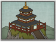

Requires
- Buildings: 
- Arts:

- Resources:

Basic Building Statistics (can be modified by difficulty level, arts, skills, traits and retainers)
- Cost: 3500
- +3 happiness
- +1 morale for all land units recruited in this province
- +4 experience for all warrior monk recruits
Description
When the spirits move, men should be still.
This province has a site of religious significance. By developing this site, more experienced monks can be trained as fanatical warriors. Alternatively, the site can be developed along less martial lines, and bring happiness to all the people of the province. A shrine is not just important because of a building, but because of the place's spirit. People may appreciate the buildings around a shrine, but it is the fundamental sanctity of the place that makes it holy. As long as the kami are respected and honoured, the shrine remains a source of spiritual strength. Today many shrines in Japan are revered historical monuments as well as shrines, and many have been listed as World Heritage Sites.